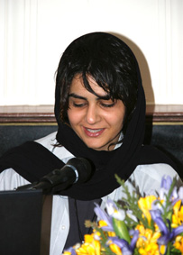

|
|
|
Browsing
Contact Us |
Campaigners |
Face to Face |
Tribune |
Interview |
News |
On the Web |
One Million |
Report
Farsi | Français | German | Italian | Spanish | العربية Also in this section
|
 Focus on the Campaigner: Azadeh FaramarzihaWednesday 13 August 2008 Interview by: Sussan Tahmasebi Azadeh can you tell us a little about yourself? I am 29 years old. I have a Bachelor of Arts Degree in Theater and work with Sahneh (Scene) Magazine, which focuses on developments in theater. How did you come to join the One Million Signatures Campaign? Last Fall I heard about the Campaign and decided to join the effort. I started my activities in the Arts Committee of the Campaign in Tehran. As part of our activities in this Committee last Winter, we developed a a Play about Raheleh Zamani, a woman who was executed.. The proposal for this play was put forth and initially developed by myself and Nasim Khosravi. I played the role of Raheleh and Nasim directed the play, which was staged at Allameh Tabatabi’e University and was well received. It also promoted much discussion about the issue of executions in Iran, and particularly about women who commit crimes, sometimes violent crimes, because they have few or no legal resources available to them in addressing their family disputes—circumstances and disputes which are often violent and unjust. I had never been involved in social issues in this way in the past, but had focused on women’s issues in my work in theater. For example, I performed in plays about women. One of these plays focused on the experiences of a woman during World War II and the other was focused on Iranian women in ancient history, specifically a female figure in the book of Kings or the Shahnameh. The Campaign provided me an opportunity to become socially active on issues that I care about. How do you think art can play a role in addressing social issues, and in particular in promoting equality for women? In general I believe that the arts can give expression to social issues. The arts can facilitate this process through indirect sharing of information, raising awareness about social problems, offering solutions and forcing people to contemplate social realities. I believe that social issues in Iran are not concrete concepts for the general public, meaning that everyone thinks that these are problems that others have to deal with and that they don’t impact them directly. This I credit greatly to the fact that artists don’t pay sufficient attention to social issues. Recently the State Broadcast started using the arts to to promote public and social issues, and specifically through the use of public service announcements on TV and radio. For example, officials were trying very hard to get people to wear seat belts, but when they started using public service announcements and a cartoon character which promoted the concept, the seat belt promotion program became concrete for viewers and it took off. This demonstrates how art can be effective in addressing social problems and how it can make issues more concrete for the public. From the start, I wanted to try to use art in the One Million Signatures Campaign, with the aim of promoting its message among the public. Fortunately, we have started to use art in this way within the Campaign. For example, we are making stickers which contain information on the law and our demands, and we stick them on buses, the metro, walls, and other public places where people can read the information or our message. We have also started developing Bluetooth files, containing information about the Campaign and our demands. These files can be played on mobile phones and can easily be sent to other mobile users. We have also started developing videos and anthems. We regularly use photos in our reports, and we have set up a photo blog to reflect developments in the Campaign. Of course, now we are broadcasting a Podcast, which is a voice program, on our site. Each episode deals with a specific issue and we use humor in the Podcasts to make them more interesting for listeners. Most importantly, we have been using theater to discuss issues like polygamy, equal rights in marriage, and other legal concerns for women. A group of Campaigners are performing street plays addressing issues that may be difficult for people to discuss, and of course other Campaigners are on hand to engage people in conversation. I hope that other activists in the Campaign will start thinking about ways to utilize the arts in their efforts to reach the public and to raise awareness, but for now I think we have made a good start. Thanks Azadeh for your time. Read Azadeh’s articles: Dolores Huerta, a Symbol of the Labor/Feminist Movements, Who Shouted Out her Demands Protest Theater: A Glance at Two Plays on Polygamy Note: Focus on the Campaigner is a new feature intended to introduce activists involved in the Campaign to our readers and will be updated on a weekly basis. |